LoginBrigade documentation
Design your WordPress login page live, let people log in with a fingerprint, face, magic link or email code, and stop password-guessing attacks. Every feature is free.
What it does
LoginBrigade designs your login page, adds easier ways to log in and protects your site from login attacks.
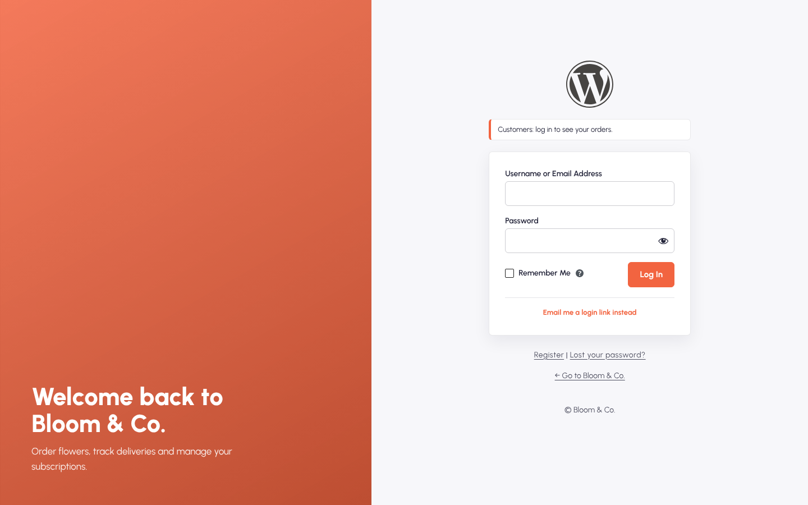
Install
- In WordPress, go to Plugins → Add New and search for LoginBrigade, or click Upload Plugin and choose
loginbrigade.zip. - Click Install Now, then Activate.
- Open LoginBrigade in the admin menu.
Passkeys need HTTPS. Everything else works on any WordPress 6.2+ site with PHP 7.4 or newer.
Getting started
The look of the login page is edited live in the WordPress Customizer. Everything else is in LoginBrigade in the admin menu. Every screen, save and button there works without reloading the page.
- Open LoginBrigade → Overview.
- Work through the setup checklist: add your logo, check that your site can send email, turn on two-factor for your own account and keep lockouts on.
- Click Customize login page (or Designer → Open live designer) and pick a template.
- Turn on the login methods you want under Login methods.
Overview
The dashboard has a sidebar with every section: Overview, Designer, Login Customizer, Login methods, Security, Redirects & forms and Settings. On phones the sidebar becomes one bar with a section menu.
- Welcome banner – whether your login design is live, your setup progress, and buttons to customize the login page or see login events.
- Four numbers for the last 30 days – logins, passwordless logins, failed logins and addresses locked out.
- Quick access – tiles for the designer, templates, magic link, passkeys, two-factor and redirects.
- Setup checklist and Quick settings for the login design, passkeys, magic links, email codes, lockouts and two-factor.
- Preview of the log in, register, lost password, magic link and email code screens on desktop or phone.
Designer
Open live designer opens Appearance → Customize → LoginBrigade with your real login page in the preview. Changes show at once; nothing goes live until you press Publish. You can also save a draft or schedule changes, as for the rest of your site.
The Designer screen in the dashboard has the same template gallery, a Reset design button and a preview. The active template is marked on its thumbnail.
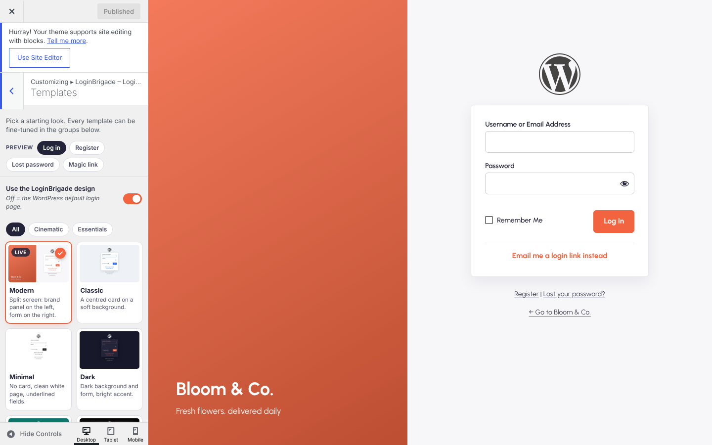
Live designer sections
At the top of every section, the Preview chips switch between log in, register, lost password, magic link and email code. Grey group headings fold away, and every slider has a reset button.
| Section | What you can change |
|---|---|
| Templates | Turn the LoginBrigade design on or off, and pick one of 17 templates (filter: Cinematic / Essentials). Each brings its own colours, shapes and animated background. “Live” marks the published one. |
| General | Logo and where it links; hide Remember Me, Lost password, Register, Go to site and the language switcher; password strength meter. |
| Layout & Position | Form left, centre or right; top or middle of the page; width, padding, space between fields; logo position and size. |
| Typography & Fonts | Included Urbanist, system or serif font; sizes, weights, button letters and spacing. Optional Google Fonts (turn on “Use Google Fonts” first): separate fonts for text, headings, buttons and fields, and an optional API key to search every Google font. |
| Colors & Backgrounds | Accent, text, labels, links, form background; page colour, gradient, background image (size, position, darkening); glass effect (form opacity and blur). |
| Buttons & Icons | Button and text colour, compact or full width, height, corners, shadow; icon colour. |
| Input Fields | Outlined, filled or underline style; height, corners, border; background, text and border colours; focus colour and ring. |
| Borders & Shadows | Form corners, border width and colour, shadow (none to glow). |
| Animations & Transitions | Form entrance (fade, slide, zoom, tilt) and its length, hover and focus speed, easing, animated backgrounds. Visitors whose device asks for less motion get none. |
| Hover Effects | Button hover background, text, border, grow and lift; press size; field hover border; link and icon hover colours. |
| Fingerprint Button | Position, alignment per device, size, style (outline, filled, soft), spacing and fine offsets. |
| Responsive Settings | Form width, padding, logo and text size per device. The device icons also switch the preview. |
| Text & Messages | Heading and subheading above the form, brand panel text (Modern), messages and footer. |
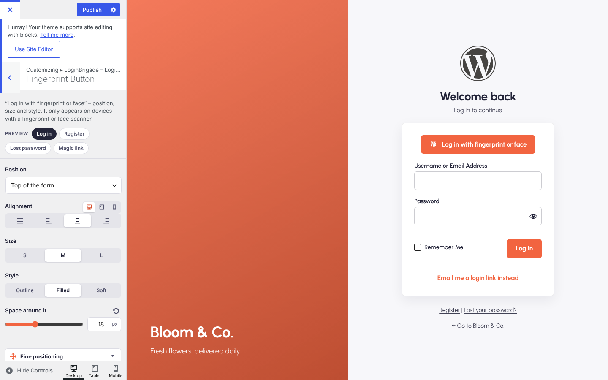
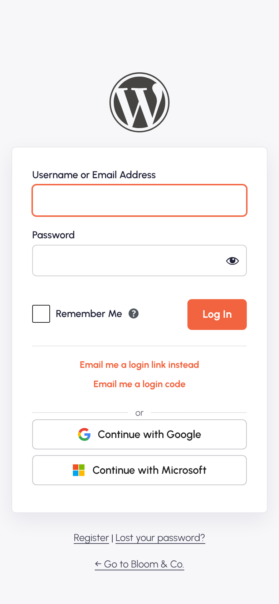
Login methods
All methods shows a card for each way to log in, with whether it’s on and a link to its settings. Every method runs the same checks as a password login: approval and email-verification plugins, IP rules, lockouts and two-factor.
Magic link, Email code, Passkeys and Two-factor each open with a status card: what the method does, how many logins used it in the last 30 days, and an On/Off switch that saves straight away.
Passkeys (fingerprint, face or screen lock)
Adds “Log in with fingerprint or face” to the login page. Works with Touch ID, Face ID, Windows Hello, Android fingerprint or screen lock, and passkeys saved in Google Password Manager, iCloud Keychain or 1Password.
- Each user opens Users → Profile → Passkeys, names the device (for example “My phone”) and clicks Add a passkey, then confirms with their fingerprint, face or PIN.
- Next time they click Log in with fingerprint or face – no username or password.
- The fingerprint or face never leaves the device; the site only stores a public key.
- A passkey counts as two factors, so the two-factor code isn’t asked for.
- Administrators: choose whether admin accounts may use passkeys.
- The button only appears on devices with a fingerprint or face scanner.
- After a password login on such a device, LoginBrigade’s own screen asks “Log in with your fingerprint next time?”. Not now hides it for good.
- New accounts: the “set your password” page from the registration email can offer Use fingerprint or face instead. It comes after the email step on purpose: the link proves the address is theirs.
- Lost a device? Log in another way and click Remove next to that passkey.
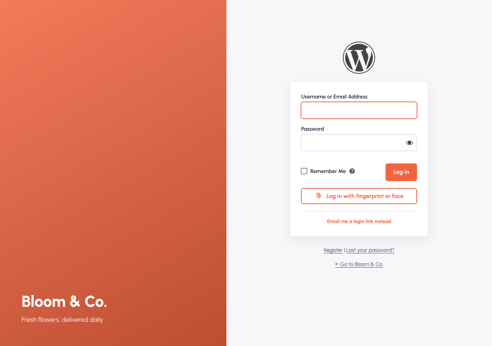
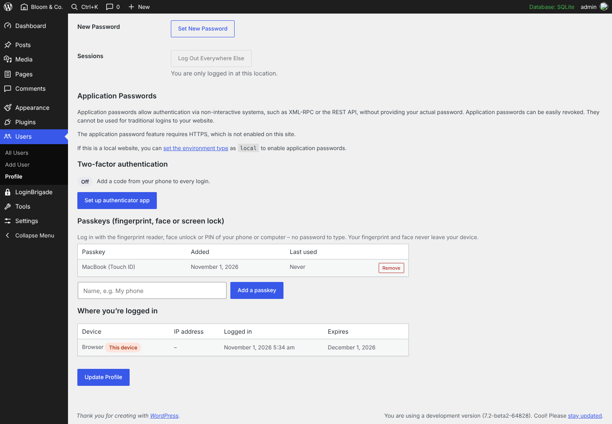
Magic link
Adds “Email me a login link instead” under the login form. People enter their email or username and click the link in the email. The link opens a Log in button first, so email security scanners can’t use it up.
- Link expires after: 5–60 minutes (default 15). Each link works once; a new link cancels the old one.
- Administrators and Only these roles: who may use it.
- Requests per address per 15 minutes (each account also gets at most 3).
- Email me a test link to try it yourself.
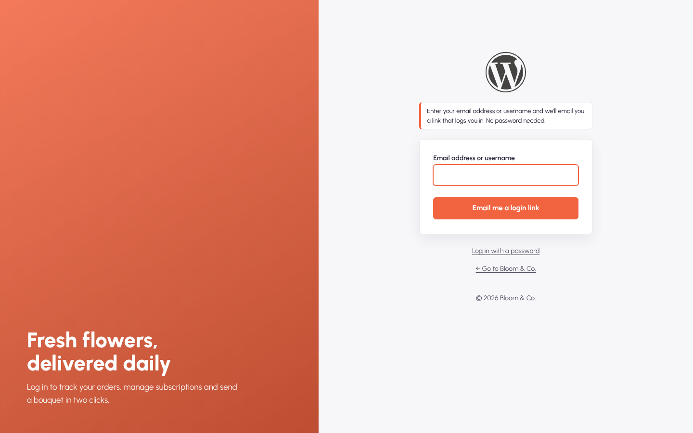
Email code
“Email me a login code” sends a 6-digit code – handy when the email is read on a phone and the login is on a computer. Set how long a code lasts, wrong tries allowed, the wait before resending, requests per address, and who may use it.
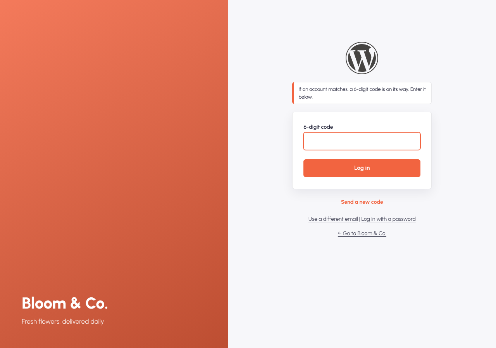
Google & Microsoft
- Copy the Redirect URI shown on this screen.
- Google: Google Cloud console → APIs & Services → Credentials → Create credentials → OAuth client ID → Web application. Paste the redirect URI, then copy the client ID and secret into LoginBrigade.
- Microsoft: Microsoft Entra admin center → App registrations → New registration → Web, and paste the redirect URI. Copy the Application (client) ID, then Certificates & secrets → New client secret.
- Who can sign in (Microsoft):
common(any account),organizations(work or school),consumers(personal), or your tenant ID (your organisation only).
Linking to existing users: by default a Google account whose verified email matches a user logs in as that user. Or choose “Only from the profile page”, where users click Connect Google/Microsoft first. Microsoft accounts are always connected from the profile page.
Secrets are stored encrypted and never shown again. To replace one, type the new value; to remove it, tick Remove.
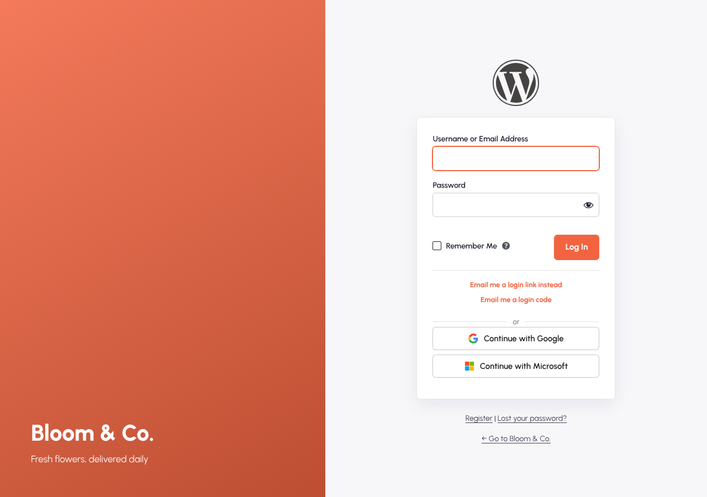
Two-factor
Users set it up on Users → Profile → Two-factor authentication: scan the QR code with an authenticator app, type the code, and save the 10 recovery codes.
- Required for: pick roles (shown as toggle chips). People with those roles set it up at their next login, and can’t skip it.
- Remember a device for: 0–30 days. Changing the password forgets all devices.
- Lost phone: log in with a recovery code. Lost those too? An administrator opens the user’s profile and clicks Reset two-factor for this user.
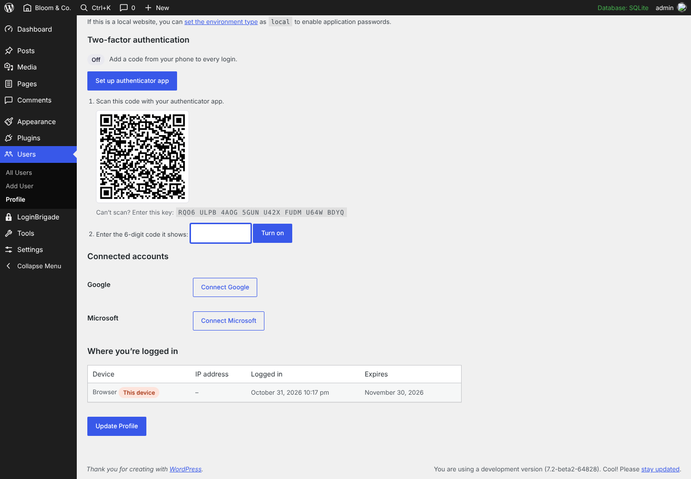
Security
Every Security screen starts with a summary: a protection score out of 100, failed logins and lockouts in the last 7 days, and how many addresses are locked out now. The score is worked out from which protections are on: lockouts, account protection, generic error messages, two-factor, CAPTCHA, a custom login address and IP rules.
Lockouts
- Failed attempts allowed within N minutes, and the lockout length.
- Account protection: when one account gets many failed logins, only addresses it used before can log in to it with a password.
- Error messages: the same answer for wrong usernames and passwords, and on “Lost password”.
- IPv6: treat a /64 network as one address (recommended).
- Trusted proxies: behind Cloudflare or a load balancer, add their address ranges and pick the header. “Your address as LoginBrigade sees it” lets you check.
- Locked out now: unlock any address.
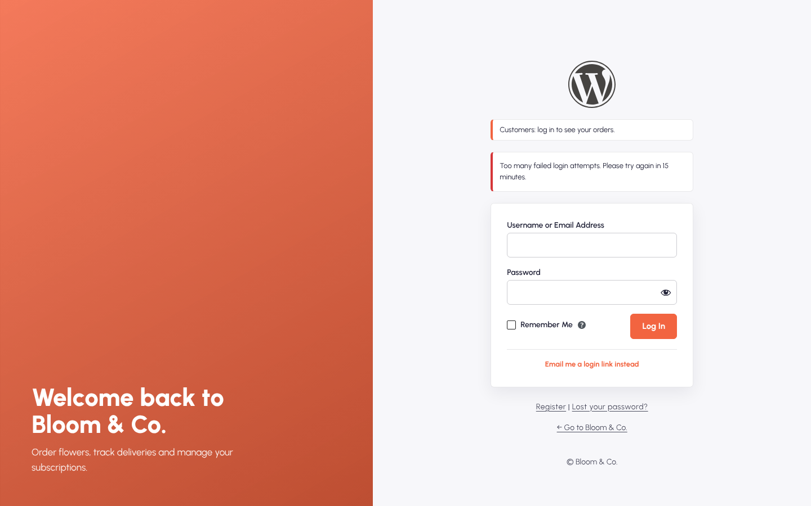
IP rules
Turn on IP rules, then add Block or Allow rules for an address (203.0.113.7) or range (203.0.113.0/24, 2001:db8::/48) with a note and an expiry. Blocked addresses can’t log in, register or reset a password. Allowed addresses are never locked out. Block wins when both match.
CAPTCHA
Cloudflare Turnstile (free). Add the site key and secret key, choose the forms, and choose what happens if Cloudflare can’t be reached: refuse the form (safer) or let it through and record an event.
Login address
Type a new address (for example team-login). Then wp-login.php and logged-out visits to /wp-admin/ show “not found”, and the new address is emailed to the site admin. Some caching plugins need the new address excluded from caching.
Sessions & events
Sessions lists who is logged in now, with Log out everywhere per user. Each user also sees their own sessions on their profile.
Events records every login, failure, lockout, code, social login, two-factor change, IP rule and security setting change. Filter by event, result and period, Export CSV, or Delete all events.
Redirects & forms
- Redirects: where administrators and everyone else land after logging in, a page per role, and where logout goes. A page the person was trying to open always wins. Redirects to the login page are refused (they would loop).
- Messages: text above each form and the footer (also in the live designer).
- Login form on pages: the LoginBrigade Login Form block, or the shortcode below.
[loginbrigade_login redirect="/members/" title="Members login" methods="no" links="no"]Settings
- Alerts & privacy: email users about logins from a new address; email yourself about lockouts (at most once an hour); a Slack webhook and which events to send; how long to keep events (default 30 days); store IP addresses as a fingerprint (default), in full, or not at all.
- Emails: subject and text of the magic link and login code emails. Placeholders:
{site},{name},{email},{link}or{code},{minutes}. - Tools: send a test email; download or import settings (secrets are never exported); reset the design or all settings; delete all data on uninstall; diagnostics.
Privacy & outside services
LoginBrigade records security events (type, time, user, result and the IP address – as a one-way fingerprint by default). Events are deleted after 30 days by default and are included in WordPress’s personal data export and erase tools. Login links, codes, recovery codes, tokens and passwords are never logged.
Nothing is sent to other services unless you turn one on:
- Google Fonts – off by default. Only after you turn on “Use Google Fonts” and pick a font does the visitor’s browser load it from Google.
- Google or Microsoft login – sign-in with those providers.
- Cloudflare Turnstile – the CAPTCHA answer and visitor IP are checked with Cloudflare.
- Slack alerts – sent to the webhook you add.
There is no tracking, no usage data and no calls to the plugin author.
Troubleshooting
| Problem | Fix |
|---|---|
| Locked out of your own site | Add define( 'LOGINBRIGADE_NO_LOCKOUT', true ); to wp-config.php, log in, unlock your address, then remove the line. Add your address as an Allow IP rule. |
| Forgot the custom login address | Check the email it sent, or add define( 'LOGINBRIGADE_DISABLE_LOGIN_URL', true ); to wp-config.php. |
| Magic links or codes never arrive | Settings → Tools → Send me a test email. If it doesn’t arrive, install an SMTP plugin. |
| Everyone gets locked out together | Your site is behind a proxy. Add it under Security → Lockouts → Trusted proxies. |
| Google says “redirect_uri_mismatch” | Copy the redirect URI from the Google & Microsoft screen exactly, including admin-post.php?action=loginbrigade_oauth. |
| “No account here is linked to that sign-in” | The user logs in another way first, then clicks Connect Google/Microsoft on their profile. |
| Lost phone and recovery codes | An administrator resets two-factor on the user’s profile. |
| No fingerprint button on the login page | The site needs HTTPS, the browser must support passkeys, the device needs a fingerprint or face scanner, and Login methods → Passkeys must be on. |
| Dashboard looks unstyled after an update | Clear your caching plugin or CDN and reload the page. |
Hooks for developers
| Hook | Type | Use |
|---|---|---|
loginbrigade_client_ip | filter | The visitor IP used for lockouts and rules |
loginbrigade_magic_link_allowed | filter | Allow or refuse magic links per user |
loginbrigade_magic_email | filter | The magic link email (to, subject, message, headers) |
loginbrigade_magic_requests_limit | filter | Link requests per address per 15 minutes |
loginbrigade_lockout | action | An address was locked out ( $ip, $username, $attempts ) |
loginbrigade_otp_allowed, loginbrigade_otp_email | filters | Email codes per user; the code email |
loginbrigade_authentication_methods | filter | The list of login methods |
loginbrigade_authentication_method_allowed | filter | Refuse a method for a user (return WP_Error) |
loginbrigade_two_factor_required | filter | Require two-factor for a user |
loginbrigade_passkey_allowed | filter | Allow or refuse passkeys per user |
loginbrigade_passkey_rp_id, loginbrigade_passkey_origins | filters | The domain and addresses passkeys are tied to |
loginbrigade_ip_blocked, loginbrigade_turnstile_result | filters | Override an IP block or a CAPTCHA result |
loginbrigade_after_login | action | After any LoginBrigade login ( $user, $method ) |
loginbrigade_security_event | action | Every recorded event ( $type, $row ) |
loginbrigade_settings_saved | action | Settings saved ( $fields, $settings ) |
loginbrigade_two_factor_reset | action | An administrator reset two-factor ( $user, $admin ) |
loginbrigade_new_login_email | filter | The “new login” email |
// Example: refuse magic links for administrators.
add_filter( 'loginbrigade_magic_link_allowed', function ( $allowed, $user ) {
return in_array( 'administrator', (array) $user->roles, true ) ? false : $allowed;
}, 10, 2 );FAQ
Is anything paid?
No. Every feature described here is free.
Do passwords still work?
Yes. The other methods are added next to the normal login; you choose which ones to show.
Does it work with membership, approval or email-verification plugins?
Yes. Every LoginBrigade login runs WordPress’s wp_authenticate_user check, so those plugins can still refuse a login.
Can I go back to the WordPress login page?
Turn off Use the LoginBrigade design in the Templates section of the live designer. Security features keep working.
What happens to my data when I uninstall?
Settings and events are kept unless you turn on Delete all data on uninstall in Settings → Tools.